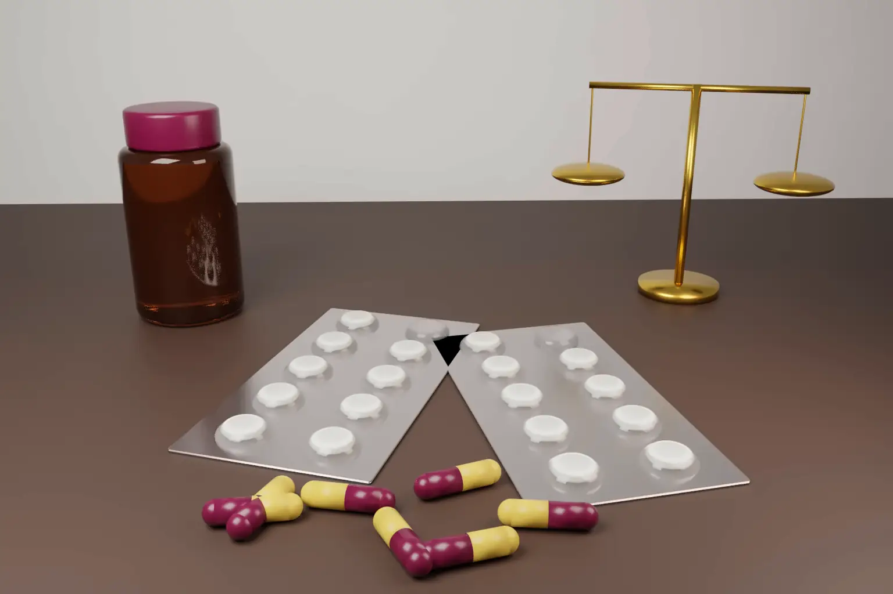

Can the Government use a patented medicine to make it affordable? On 28 September 2026 the Kerala High Court said section 100 of the Patents Act allows exactly that. It then left the decision to the Central Government.
The case is In Re: Exorbitant Pricing of Life Saving Patented Medicines v Union of India, W.P.(C) No. 18999 of 2022, 2026:KER:74251. Justice Harisankar V. Menon decided it. The petition began with a retired bank employee who had metastatic breast cancer. She died while the case was pending, and the court continued it in the public interest with the help of an amicus curiae.
- Section 100 lets the Government make a patented medicine and sell it, including to needy patients, on a non commercial basis.
- The section should be used where the Government must step in, for example when a patented medicine is sold at an exorbitant price.
- The court did not order the Government to use section 100. It called that a policy decision.
- The Government must collect data and decide whether the medicine is affordable.
- The court did not decide anything about the validity of the patents involved.
The facts
The medicine at the centre of the case was ribociclib, used for advanced breast cancer. Novartis AG holds Indian Patent No. 283133 for it. The petition put the cost at about Rs 58,140 for 21 days of treatment. The Deputy Solicitor General told the court that 21 tablets cost Rs 24,355 in early 2026 and about Rs 22,335 by July 2026.
Eli Lilly India, which makes abemaciclib, was added as a respondent. The petitioner's original prayers relied on both section 92 and section 100. The amicus later pressed only section 100.
The Government argued that palbociclib, an older drug now off patent, was a cheaper alternative. The court did not accept that. It found the two drugs are not interchangeable for the patients concerned.
What section 100 says
Section 100 sits in Chapter XVII of the Patents Act, 1970. It lets the Central Government, or any person it authorises in writing, use an invention "for the purposes of Government". Section 99 defines that phrase. It covers making, using, exercising or vending an invention for the Central Government, a State Government or a Government undertaking.
The question was how wide that phrase is. The Bombay High Court in Garware Wall Ropes v A.I. Chopra had read it narrowly. The Kerala High Court distinguished that case. It read the phrase in section 99(1) together with section 100(4) and (6), which cover making, using and vending medicines. It also relied on section 83 on public health and affordable prices.
The court also relied on Articles 21 and 47 of the Constitution. It noted the Supreme Court's discussion of section 100 and TRIPS flexibilities in the 2021 suo motu case on essential supplies during the pandemic. It referred to the Lok Sabha debates on the bill that became the Patents (Amendment) Act, 2002. Those debates described the Government procuring medicines and selling them to hospitals.
What the court decided
The court gave three findings. First, section 100 includes the Government's power to make a patented medicine. That includes selling it to a needy patient on a non commercial basis. Second, the section should be invoked where the Government has to intervene, such as when a patented medicine is sold at an exorbitant price. Third, the Government must collect the necessary data, decide whether a medicine is affordable and, if needed, act under section 100.
The court stopped short of a direction. It held that patent protection matters and that section 156 binds the Government to patents. Whether to invoke section 100 is a policy choice for the Central Government. The court relied on State of Punjab v Ram Lubhaya Bagga on the limits of judicial review in health policy.
What the court did not decide
- It did not find that ribociclib is unaffordable. The data needed for that finding was not on record.
- It did not decide the section 92 route or set aside the Government's 2022 decision on it.
- It did not rule on the amicus's argument that "may" in section 100 means "shall".
- It said nothing about the validity of the Novartis or Eli Lilly patents.
The outcome leaves the key decision with the Government. The legal holding is still significant. It is a rare reasoned High Court reading of section 100 as a tool for access to medicines.
How section 100 fits with other Indian routes
India has three other public interest tools in the Patents Act. Section 84 allows any person to seek a compulsory licence three years after grant. One ground is that the invention is not available to the public at a reasonably affordable price. Under section 92, the Central Government can notify a national emergency, extreme urgency or public non commercial use. Any interested person can then apply to the Controller for a licence, without the three year wait. Section 66 allows revocation of a patent that is mischievous to the State or prejudicial to the public.
Section 100 is different. It needs no application by a private licensee and no waiting period. The Government acts directly, and the patentee is usually paid. Under section 100(3), terms are agreed with the patentee or fixed by the High Court under section 103. Payment is capped at adequate remuneration. The patentee can therefore expect payment, but not an injunction.
How the US and Europe compare
United States. Under 28 U.S.C. § 1498, the federal Government may use or have others make a patented invention. The patent owner's only remedy is a claim for reasonable and entire compensation in the Court of Federal Claims. Separately, the Bayh Dole march in power in 35 U.S.C. § 203 applies only to federally funded inventions. Price is not one of its listed grounds.
European Union. Regulation (EU) 2025/2645 has applied since 19 January 2026. It lets the Commission grant a Union compulsory licence once a crisis or emergency mode is activated under a listed Union instrument. The Commission must consider whether a voluntary agreement is achievable. The licensee pays remuneration set by the Commission. Products made under it must stay in the EU. It is a crisis tool and does not address everyday pricing. National compulsory licensing laws in Member States sit alongside it.
United Kingdom. Sections 55 to 59 of the Patents Act 1977 provide for Crown use. A government department may authorise use for the services of the Crown. These services include supplying specified drugs and medicines for NHS services. The proprietor is paid on agreed terms or on terms the court sets.
The common thread is clear. Each system allows the state to use a patent without consent, and each requires payment. India's section 100, as read in Kerala, is unusual because a court has tied it expressly to affordability.
Practical steps
- Patentees of high value medicines in India should keep pricing, access programmes and supply data in order. If the Government collects affordability data, that record will matter.
- Expect a remuneration debate, not an injunction. If section 100 is invoked, focus on terms under section 100(3) and the High Court's role in fixing them.
- Generic manufacturers should note that section 100 authorisation comes from the Government. It is not a right a private company can claim for itself.
- Patient groups and hospitals can place affordability data before the Ministry. The judgment says that data is what decides the question.
- Global portfolios should map state use rules in every major market, including India, the US, the EU and the UK.
Our patent services cover pharmaceutical filing, opposition and enforcement in India. For the wider patent life cycle, see our step by step guide to patent filing in India. Our note on patent term and grant delay in the Supreme Court covers another live issue for drug patents.
Frequently asked questions
What is section 100 of the Patents Act in India?
It allows the Central Government, or a person it authorises, to use a patented invention for the purposes of Government. The patentee is usually paid, on agreed terms or terms fixed by the High Court under section 103. Payment is capped at adequate remuneration.
Can the Indian Government make a patented medicine cheaper using section 100?
The Kerala High Court has held that it can make and sell the medicine on a non commercial basis. Whether to do so is the Central Government's decision.
Is government use the same as a compulsory licence?
No. A section 84 compulsory licence is granted by the Controller to an applicant after three years. Section 100 is direct use by the Government itself, with payment to the patentee.
Official source
- In Re: Exorbitant Pricing of Life Saving Patented Medicines v Union of India, Kerala High Court, W.P.(C) No. 18999 of 2022, 2026:KER:74251, 28 September 2026
- The Patents Act, 1970 (India Code)
- 28 U.S.C. § 1498 and 35 U.S.C. § 203
- Regulation (EU) 2025/2645 on compulsory licensing for crisis management
- UK Patents Act 1977, section 55